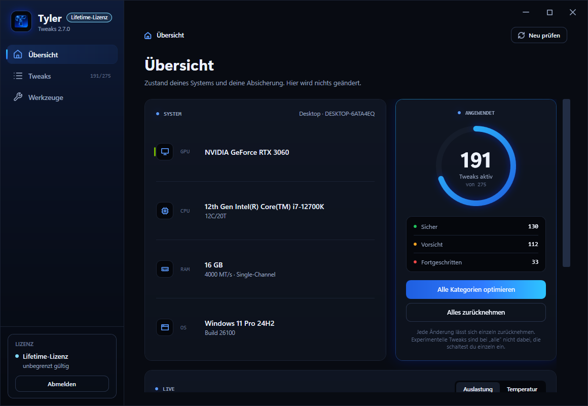
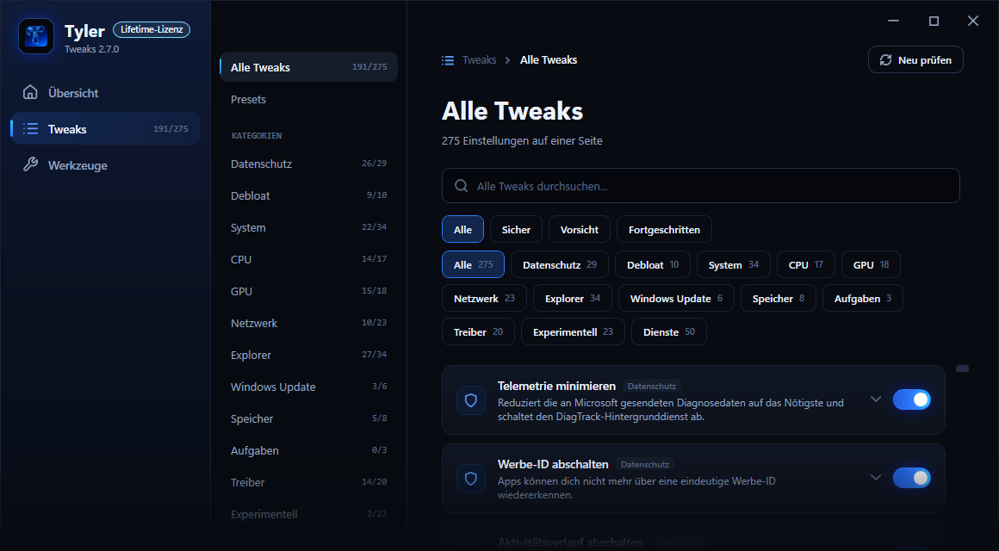

Windows aufräumen
Überflüssige Dienste, Telemetrie und vorinstallierte Apps raus. Weniger Hintergrundlast, mehr Ressourcen fürs Spiel.
Optimiere deinen Gaming-PC mit nachvollziehbaren Windows-, Performance- und Netzwerk-Einstellungen. Die Tweak App erledigt das per Klick — oder ich mache es persönlich für dich. Vor jeder Änderung wird gesichert, alles lässt sich wieder zurücksetzen.
Kein Skript-Chaos, keine Registry-Bastelei von Hand. Du siehst jede Einstellung, schaltest sie an oder aus und kannst jederzeit auf den Ausgangszustand zurück.

Übersicht: erkannte Hardware, wie viele Tweaks gerade aktiv sind und die Live-Auslastung. Auf dieser Seite wird nichts verändert.

Tweaks: filterbar nach Kategorie und Risiko, jeder Eintrag mit Erklärung und eigenem Schalter. Die vollständige Liste siehst du in der App.
Nur zum Ansehen. Hier wird nichts an deinem Rechner geändert — die Schalter sind ohne Wirkung. Die Einträge sind aber echt: Es ist derselbe Katalog, den die App mitbringt.
Dazu gibt es hier nichts.
So sieht die Tweak-Liste in der App aus. Auf einer eigenen Seite kannst du alle in Ruhe durchgehen.
Ein Preset bündelt 21 Einstellungen: MMCSS-Priorität für Spiele, Core Parking, Power Throttling, GameDVR und Vollbild-Optimierungen.
CPU, GPU, Arbeitsspeicher, Energieplan, visuelle Effekte und Startverzögerung — jeweils einzeln schaltbar.
Nagle-Algorithmus, Netzwerk-Throttling und die Energiespar-Einstellungen der Netzwerkkarte, die Latenz kosten können.
Mausbeschleunigung aus, Tastatur-Wiederholrate und Eingabe-Warteschlange. Bewusst schlank — die App ersetzt keine Maus-Software.
Vorinstallierte Store-Apps entfernen und Autostart aufräumen — inklusive versteckter Einträge und geplanter Aufgaben. Eine Schutzliste verhindert, dass etwas Wichtiges fliegt.
Live-Übersicht über CPU, GPU, Arbeitsspeicher und Windows-Version. Sind Werte nicht auslesbar, steht dort „n/v" statt einer erfundenen Zahl.
Windows-Wiederherstellungspunkt, Registry-Sicherung und der alte Wert jedes einzelnen Tweaks. Im Verlauf machst du jede Änderung einzeln rückgängig.
Schließt Hintergrundprogramme vor dem Spielen und startet sie danach wieder. Systemprozesse sind durch eine Schutzliste ausgenommen.
Schlüssel beim ersten Start eingeben, danach meldet sich die App selbst an. Fällt das Internet aus, läuft sie bis zum Ablauf der Lizenz weiter.
Nimm auf, welche Tweaks bei dir gerade gesetzt sind, gib dem Ganzen einen Namen — und stell denselben Zustand auf einem neuen PC oder nach einer Neuinstallation mit einem Klick wieder her. Dazu die fünf festen Presets Gaming, Privatsphäre, Tempo, Aufräumen und Sicher.
Die App prüft derzeit nicht selbst auf neue Versionen. Neue Versionen lädst du im Kundenbereich herunter und installierst sie über die alte — deine Lizenz bleibt gültig.
Per Remote-Sitzung gehe ich dein System durch und stelle alles passend zu deiner Hardware ein. Jeder Schritt wird erklärt und dokumentiert — du weißt am Ende genau, was geändert wurde.
Überflüssige Dienste, Telemetrie und vorinstallierte Apps raus. Weniger Hintergrundlast, mehr Ressourcen fürs Spiel.
Saubere Treiberinstallation, korrekte Profile in der Systemsteuerung, Shader-Cache und die Einstellungen, die wirklich etwas bringen.
Nagle, Drosselung, DNS und Adapter-Einstellungen richtig gesetzt — für stabilere Ping-Werte und weniger Ausreißer.
Beschleunigung raus, Polling-Rate, Empfindlichkeit und USB-Energieverwaltung — damit dein Aim genau das macht, was du willst.
Energieprofil, Core Parking, C-States und Timer so gesetzt, dass deine CPU nicht mitten im Fight heruntertaktet.
Startprogramme ausmisten, geplante Aufgaben prüfen, RAM- und Datenträger-Einstellungen aufräumen. Schnellerer Start, weniger Ruckler.
Dauer je nach System meist 45 bis 90 Minuten. Am Ende bekommst du eine Liste aller Änderungen und das Backup — auch wenn du später selbst etwas rückgängig machen willst.
Einmalzahlung. Keine Abos, keine Folgekosten, keine versteckten Posten.
Das Werkzeug, mit dem du selbst tweakst — so oft du willst.
Zahlung über PayPal · Lizenz sofort im Kundenbereich
Die App und die persönliche Optimierung zusammen.
Du sparst 9,99 €
Zahlung über PayPal · Lizenz sofort, Termin direkt danach
Ich optimiere deinen PC persönlich per Remote-Sitzung.
Zahlung über PayPal · Termin nach Absprache
Kurzer Hinweis zum Kauf: Der Lizenzschlüssel wird gerade noch von Hand vergeben. Du bezahlst wie gewohnt über PayPal und schreibst mir danach kurz auf Discord tyler061312 — dann bekommst du deinen Schlüssel, meist innerhalb weniger Stunden.
Alle Preise in Euro, inklusive der jeweils geltenden Steuern. Für den Kauf brauchst du ein kostenloses Konto — dein Lizenzschlüssel wird nach der bestätigten Zahlung automatisch erzeugt und liegt sofort in deinem Kundenbereich. Du musst nichts anfordern.
Vier Schritte, keine Überraschungen. Vom Klick bis zum Download vergehen in der Regel wenige Minuten.
Registrieren, E-Mail bestätigen, fertig. Dauert eine Minute und kostet nichts — dort landen später Lizenz und Download.
Laufzeit aussuchen und über PayPal zahlen. Deine Zahlungsdaten sehe ich nie — es gilt der PayPal-Käuferschutz.
Sobald PayPal die Zahlung bestätigt, erzeugt das System deinen Lizenzschlüssel und legt ihn in dein Konto. Ohne Nachfragen, ohne Warten.
Im Kundenbereich lädst du die App herunter, kopierst deinen Schlüssel und gibst ihn beim ersten Start ein. Fertig.
Bei der PC-Optimierung entfällt der Download — stattdessen machen wir direkt einen Termin für die Remote-Sitzung aus.
Jede einzeln an- und abschaltbar, jede mit Klartext dazu, was sie in Windows ändert. Keine Sammelschalter, hinter denen man nicht sieht, was passiert.
Ändert nichts, was den Betrieb stören kann. Vollständig umkehrbar.
Ändert spürbar, wie sich Windows verhält — etwa wenn ein Dienst abgeschaltet wird, den du doch brauchst. Die App schreibt vorher hin, was wegfällt.
Greift in eine Systemkomponente ein. Nur sinnvoll, wenn du weißt, was du willst — und mit Rückfrage, bevor etwas passiert.
der Änderungen wirken erst nach einem Neustart. Welche das sind, steht an jeder einzelnen — nicht im Kleingedruckten.
Lieber vorher ehrlich als hinterher enttäuscht. Hier steht, was passiert, was unterstützt wird und was ich bewusst nicht anfasse.
Zu jedem einzelnen Tweak merkt sich die App den vorherigen Wert — nicht den Windows-Standard, sondern genau das, was bei dir vorher eingestellt war. Im Verlauf machst du jede Änderung einzeln rückgängig.
Zusätzlich sichert die App die betroffenen Registry-Zweige und legt vor größeren Durchläufen einen Windows-Wiederherstellungspunkt an. Du kommst also auch dann zurück, wenn die App selbst nicht mehr startet.
Eine Ausnahme: Entfernte Store-Apps holt die App nicht zurück. Sie weist vorher darauf hin.
Bei Notebooks sperren manche Hersteller Energieeinstellungen. Frag im Zweifel vorher kurz nach.
Unter Einstellungen → Über prüfst du per Knopfdruck, ob eine neue Version da ist. Von selbst meldet sich die App bewusst nicht, und sie aktualisiert sich auch nicht selbst: Du lädst die neue Fassung im Kundenbereich und installierst sie über die alte. Dein Schlüssel bleibt derselbe.
Melde dich auf Discord (tyler061312). Bei der Optimierung bessere ich innerhalb von 14 Tagen kostenlos nach, wenn etwas nicht läuft wie besprochen.
Bei der App hilft im Zweifel die Ein-Klick-Wiederherstellung — und wenn die App auf deinem System nicht startet, finden wir gemeinsam eine Lösung.
Die Zahlung läuft über PayPal, damit du auch von dieser Seite abgesichert bist.
Steht deine Frage nicht dabei, schreib mir einfach auf Discord.
Zwei Dinge: eine Windows-Software für Gaming-PCs — die Tweak App — und eine persönliche Optimierung, bei der ich deinen PC per Remote-Sitzung selbst einstelle. Du kannst beides einzeln oder zusammen im Bundle bekommen.
Sie fasst dokumentierte Windows-Einstellungen in einer Oberfläche zusammen: . Jede lässt sich einzeln an- und abschalten, und zu jeder steht dabei, was sie bewirkt.
Dazu kommen fünf fertige Presets, eigene Profile, ein Autostart- und App-Manager, der Game Booster und eine Live-Übersicht über CPU, GPU und Arbeitsspeicher.
Die vollständige Liste kannst du hier durchsehen — ohne Anmeldung, mit den Registry-Werten, die jede Einstellung schreibt.
Ja, beide — jeweils in der 64-Bit-Version. Ältere Windows-Versionen werden nicht unterstützt.
Ja. Die App ändert Windows-Einstellungen, keine Treiber-internen Werte — sie ist deshalb unabhängig davon, welche Grafikkarte oder CPU verbaut ist. AMD, Intel, NVIDIA: alles gleichermaßen.
Grundsätzlich ja, aber mit Einschränkungen. Manche Hersteller sperren Energieeinstellungen oder überschreiben sie mit eigener Software. Tweaks, die auf deinem Gerät nicht anwendbar sind, meldet die App ehrlich als nicht unterstützt, statt sie stillschweigend zu überspringen.
Bei Notebooks im Akkubetrieb sind Leistungs-Tweaks außerdem oft kontraproduktiv, weil sie die Laufzeit kosten.
Ja. Die App ändert Einstellungen in der Registry und an Windows-Diensten — das geht nur mit erhöhten Rechten. Beim Start erscheint deshalb die Windows-Abfrage der Benutzerkontensteuerung.
Dabei steht aktuell „Unbekannter Herausgeber“ und Windows SmartScreen warnt beim ersten Start, weil das Setup noch nicht mit einem Zertifikat signiert ist. Das ist bekannt und ändert sich, sobald ein Code-Signing-Zertifikat vorliegt.
Ja, auf drei Ebenen. Die App merkt sich zu jedem Tweak den vorherigen Wert und macht ihn im Verlauf einzeln rückgängig. Zusätzlich sichert sie die betroffenen Registry-Zweige und legt auf Wunsch einen Windows-Wiederherstellungspunkt an.
Eine Ausnahme: Entfernte Store-Apps lassen sich über die App nicht zurückholen — die musst du bei Bedarf aus dem Microsoft Store neu installieren. Die App weist vorher darauf hin.
Es werden ausschließlich dokumentierte Windows-Einstellungen geändert — kein Übertakten, keine Spannungsänderungen, kein Eingriff in die Hardware. Deine Garantie bleibt davon unberührt.
Vor wichtigen Änderungen wird gesichert, und eine Schutzliste verhindert, dass beim Aufräumen etwas entfernt wird, das Windows braucht.
Sobald PayPal die Zahlung bestätigt hat, legt das System die Bestellung an, erzeugt deinen Lizenzschlüssel und ordnet ihn deinem Konto zu. Beides erscheint sofort im Kundenbereich — du musst nichts anfordern und auf nichts warten.
Hast du die PC-Optimierung oder das Bundle gekauft, schreibst du mir danach auf Discord tyler061312, und wir machen einen Termin aus.
Dauerhaft in deinem Kundenbereich unter „Meine Lizenzen“, mit einem Knopf zum Kopieren. Du kannst den Schlüssel also nicht verlieren.
Passwort vergessen? Über „Passwort vergessen“ setzt du es per E-Mail zurück.
Im Kundenbereich unter „Downloads“. Der Knopf wird freigeschaltet, sobald eine gültige Lizenz auf deinem Konto liegt. Du lädst das Setup herunter, führst es aus und gibst beim ersten Start der App deinen Schlüssel ein.
Zu jeder Version steht dort die SHA-256-Prüfsumme, mit der du die Datei überprüfen kannst.
Derzeit von Hand: Die App prüft noch nicht selbst, ob eine neue Version vorliegt. Erscheint eine, lädst du sie im Kundenbereich herunter und installierst sie über die vorhandene — deine Einstellungen und deine Lizenz bleiben erhalten.
Neue Versionen kosten nichts extra. Eine automatische Update-Prüfung ist geplant, aber noch nicht eingebaut.
24 Stunden, 2 Tage, 1 Woche, 1 Monat, 1 Jahr — oder Lifetime, das läuft nie ab.
Kurze Laufzeiten sind zum Ausprobieren gedacht. Nach Ablauf startet die App nicht mehr. Deine Windows-Einstellungen bleiben dabei natürlich so, wie du sie gesetzt hast.
Nein. Eine Lizenz gilt für einen PC. Beim ersten Start wird der Schlüssel fest an diesen Rechner gebunden, danach lässt er sich auf keinem anderen aktivieren.
Wenn du den PC wechselst oder neu aufsetzt und die Hardware sich ändert, schreib mir kurz auf Discord — ich löse die Bindung, der Umzug kostet nichts.
Nach dem Kauf meldest du dich auf Discord, wir machen einen Termin aus und verbinden uns per Remote-Sitzung. Ich gehe dein System durch und erkläre dabei jeden Schritt. Das dauert je nach Zustand meist 45 bis 90 Minuten.
Am Ende bekommst du ein Protokoll aller Änderungen und das Backup — damit kannst du später auch selbst etwas zurücknehmen.
Das hängt von deiner Hardware und deinem Ausgangszustand ab. Ein System mit vielen Hintergrundprogrammen gewinnt deutlich, ein bereits sauberes kaum.
Ich nenne bewusst keine Zahl. Wer dir „+100 FPS garantiert“ verspricht, kennt weder deinen PC noch deine Spiele.
Ja, ein kostenloses Konto mit E-Mail-Adresse und Passwort. Dadurch liegen Bestellung, Lizenzschlüssel und Download dauerhaft an einer Stelle — und du kommst auch dann wieder heran, wenn du den PC neu aufsetzt.
Nach der Registrierung bekommst du eine Bestätigungsmail. Erst nach dem Klick auf den Link darin kannst du kaufen.
Hinter Tyler Tweaks steht kein Callcenter, sondern eine Person. Dafür antworte ich selbst — und weiß, wovon ich rede.
Schreib mir direkt auf Discord. Dort erreichst du mich am zuverlässigsten, und wir können bei Bedarf sofort auf Sprache oder Bildschirmfreigabe wechseln.
tyler061312
Antwort meist innerhalb weniger Stunden, spätestens am nächsten Tag.
So geht es weiter:
Deine Bestellnummer steht im Kundenbereich unter „Bestellungen“.
Eine Kontaktadresse per Post und E-Mail findest du im Impressum.
Mit dem Bundle bekommst du die App und die persönliche Optimierung — und sparst 9,99 €.